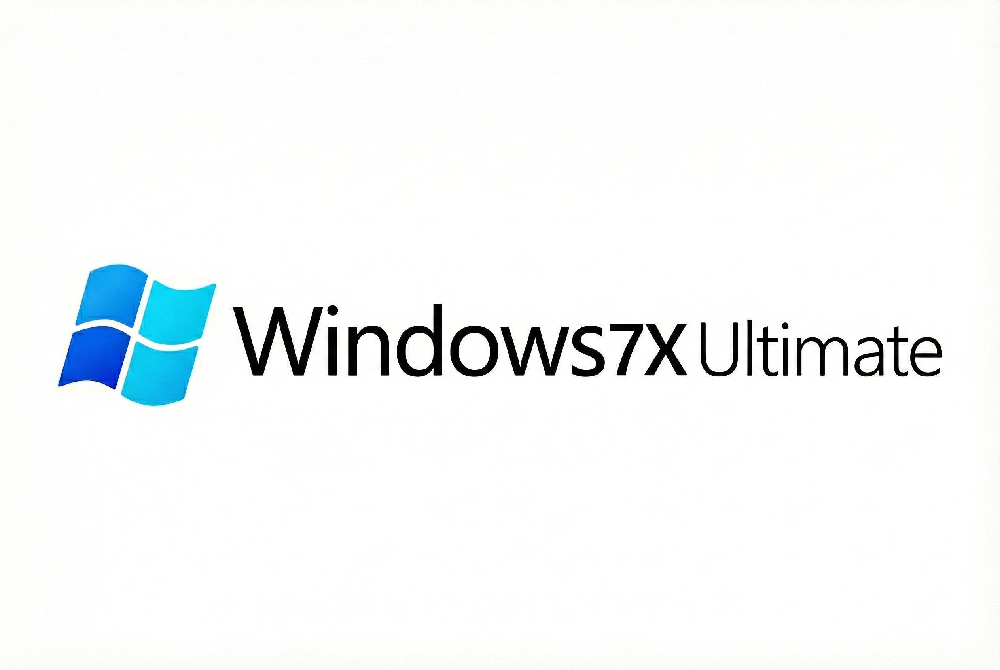
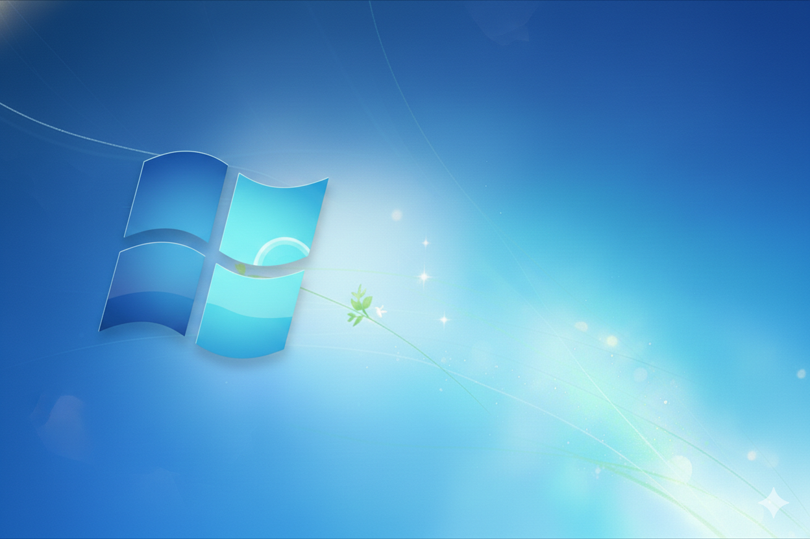

Neler Yeni?

Optimize Çekirdek
Windows 7X Ultimate çekirdeği, düşük RAM kullanımı için yeniden yapılandırıldı.

Sürücü Desteği
NVMe SSD ve USB 3.0/3.1 sürücüleri doğrudan ISO içine entegre edildi.

Modern Güvenlik
Telemetry verileri temizlendi, 2026 standartlarında gizlilik sağlandı.
 Kurucu Paneli (TDCDev)
Kurucu Paneli (TDCDev)